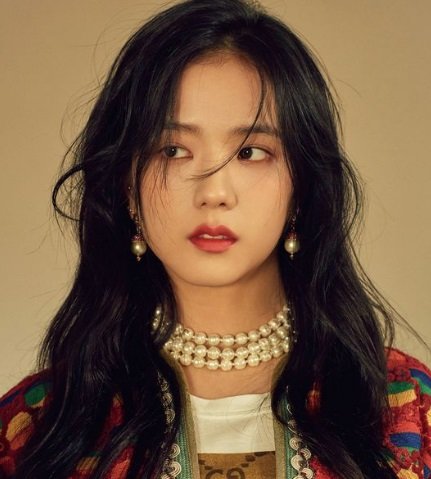

Kim Jisoo was born in Gunpo, Southern Korean where she auditioned for YG Entertainment.In the group, she often plays to leader role. However, She is not only a singer, she also participate in several television dramas, including "The Producers" (2015) and "Snowdrop" (2021), where she showcased her acting skills. Although she is the only member who does not speak English fluently, the singer speaks Korean, Japanese and Chinese. Jisoo joined Dior and Cartier as a global ambassadors.
Jisoo released her solo album, Me, in March 2023, featuring the songs "Flower", "All Eyes On Me"
#JISOO ‘꽃(FLOWER)’ TITLE POSTER#지수 #BLACKPINK #블랙핑크 #FIRSTSINGLEALBUM #ME #TITLE #꽃 #FLOWER #20230331_12amEDT #20230331_1pmKST #RELEASE #YG pic.twitter.com/1Hz39N0TmL
— BLACKPINKOFFICIAL (@BLACKPINK) March 19, 2023